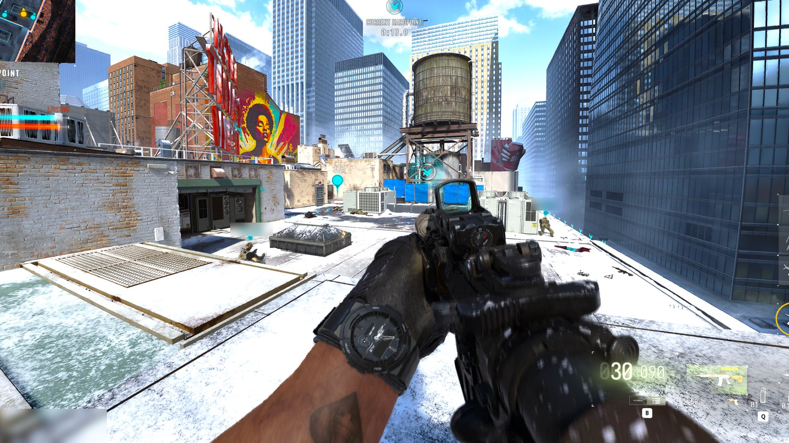
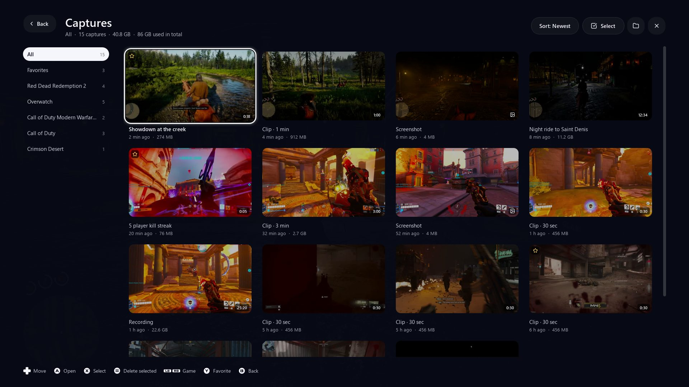
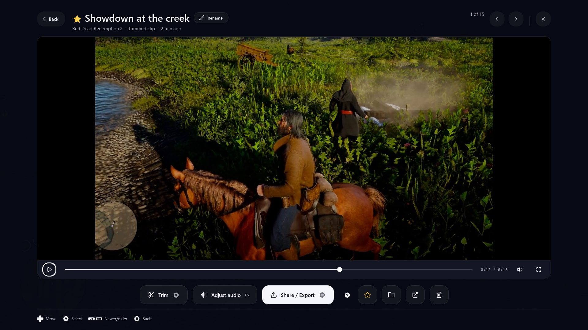
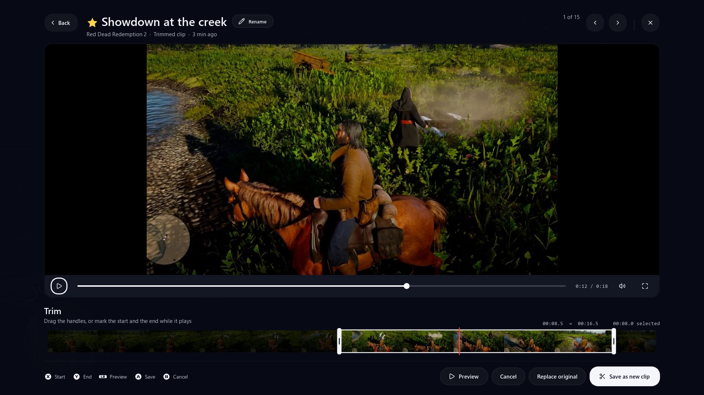
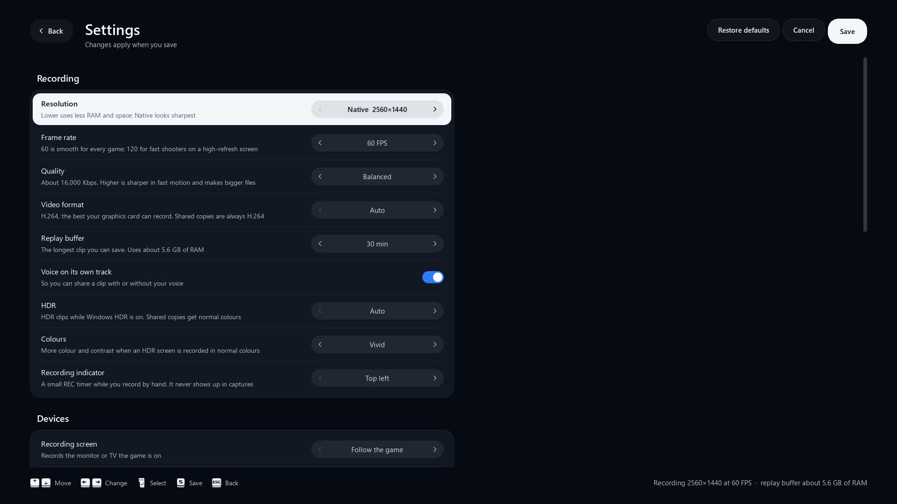
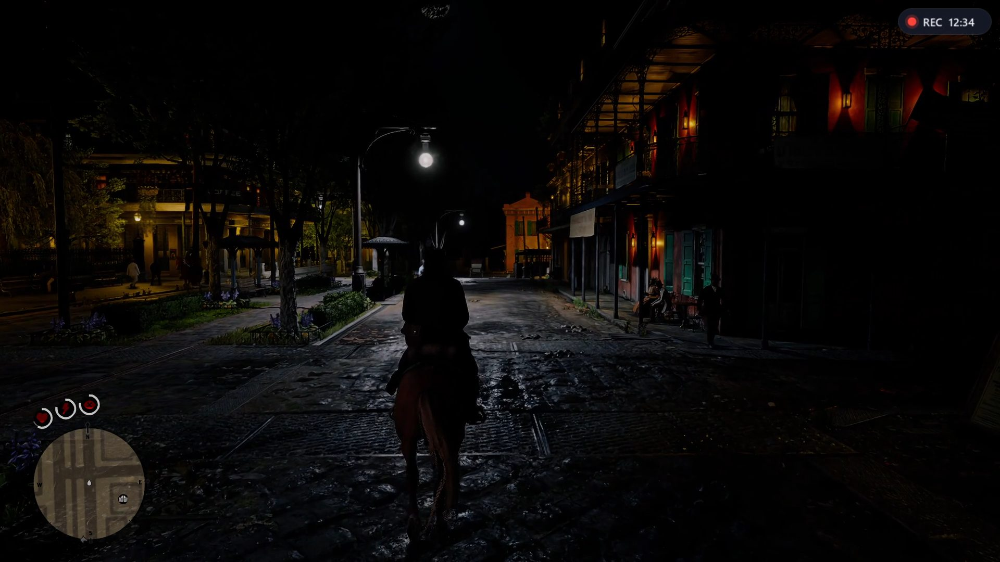

Free and open source, for Windows 10 and 11
The PS5 Create button, on your PC.
Capture Menu keeps the last 30 minutes of any game. Press once to pick what to save. Press twice to save the last 30 seconds.
About 50 MB. No account, no ads. Setup installs OBS and FFmpeg for you.
Press it anywhere on this page AltC
Try the menu
This is the real menu, rebuilt in the page. Press Alt + C once to open it, then move with the arrows or the mouse and pick with Enter. Press twice to save the last 30 seconds. A controller plugged into this computer works too.

How it works
- 01
Play
It quietly keeps the last 30 minutes of your game, on any screen, with any graphics card.
- 02
Press
Once for the menu over your game: save 15 seconds up to 30 minutes, screenshot or record. Twice to save the last 30 seconds.
- 03
Keep
Every game gets its own folder. Watch it, trim it to the frame, share it to Discord or your phone.
Everything after the press
Saving is one part. The rest of the app is built for what you do next with the clip, with a controller or a mouse.
Pick how much to keep
The last 15 seconds, 1, 3, 5, 15 or 30 minutes, or everything. With the mouse, the keys or the d-pad.

A folder for every game
Found automatically. Favorites, titles, notes, sizes, sorting.

Watch it right away
A viewer with your voice and the game on their own tracks.

Trim to the frame
Then share a copy sized for Discord or your phone, straight to the clipboard.

Set up for your PC
Resolution, frame rate, quality and how much to keep, on one page.

Record for hours
A small REC timer while you record. Screenshots in full resolution.
Questions
Something else? Open an issue on GitHub.
- Is it really free?
- Yes. It's open source under the MIT license: no account, no ads, no watermark.
- What does it need?
- Windows 10 or 11. Setup installs OBS Studio and FFmpeg if you don't have them and sets OBS up for your PC: resolution, the best encoder for your graphics card and the 30-minute replay buffer.
- Windows says "Windows protected your PC"
- Windows shows that for apps that aren't signed yet. Click More info, then Run anyway. Code signing is on the way.
- Will it slow my game down?
- Capture Menu uses about 75 MB while it waits, and its FFmpeg work runs at low priority. The 30-minute buffer lives in OBS and uses RAM (up to about 2.9 GB at 1440p); pick a shorter buffer or lighter quality in Settings for less.
- Does anything leave my PC?
- No. It talks to OBS on your PC, and to GitHub only when you check for updates. Your clips stay with you.
- Is it in Arabic?
- Yes, the whole interface, right to left, like the PS5.
Download Capture Menu
Free for Windows 10 and 11. Setup takes about a minute.